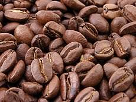
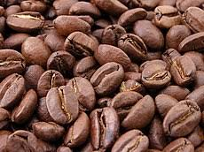

México, onceavo productor mundial de café
La producción de sus cafetos representa 2.4% del total mundial
Secretaría de Agricultura y Desarrollo Rural | 02 de marzo de 2018
El café es un cultivo estratégico en México; su producción emplea a más de 500 mil productores de 15 entidades federativas y 480 municipios. Actualmente se consumen 1.4 kg per cápita al año.
México produce cafés de excelente calidad, ya que su topografía, altura, climas y suelos le permiten cultivar variedades clasificadas dentro de las mejores del mundo, la variedad genérica que se produce en nuestro país es la arábica y su producción se realiza por lo regular en las zonas tropicales.
En México hay 15 estados productores de café; al sur del país, Chiapas es el principal estado productor, aporta 41.0% del volumen nacional, seguido por Veracruz (24.0%) y Puebla (15.3%).
 
